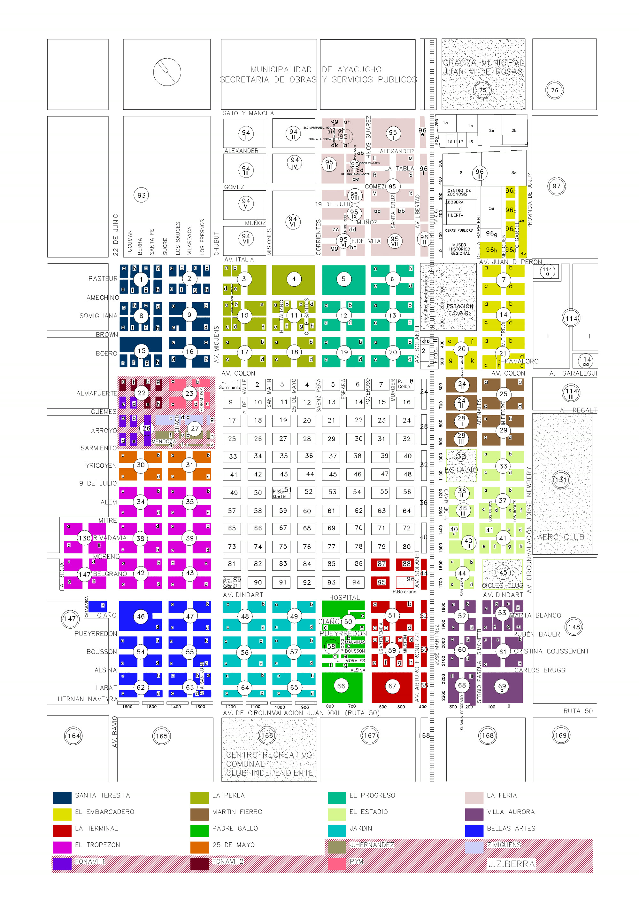
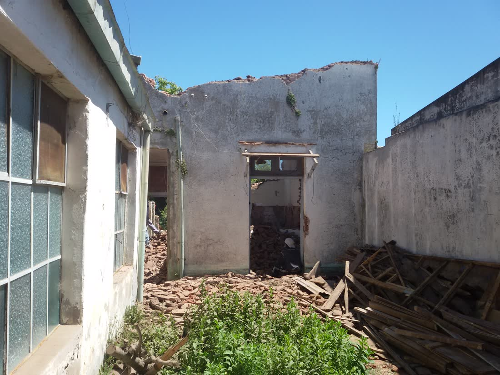
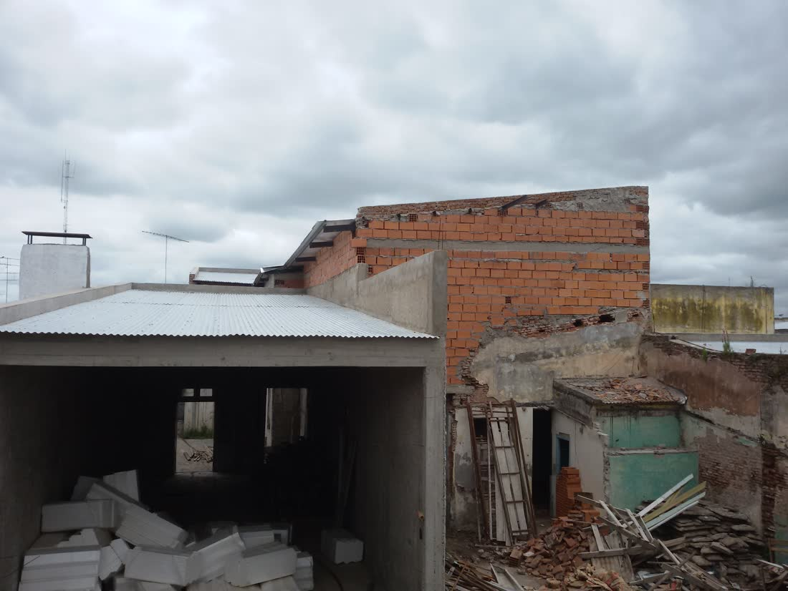
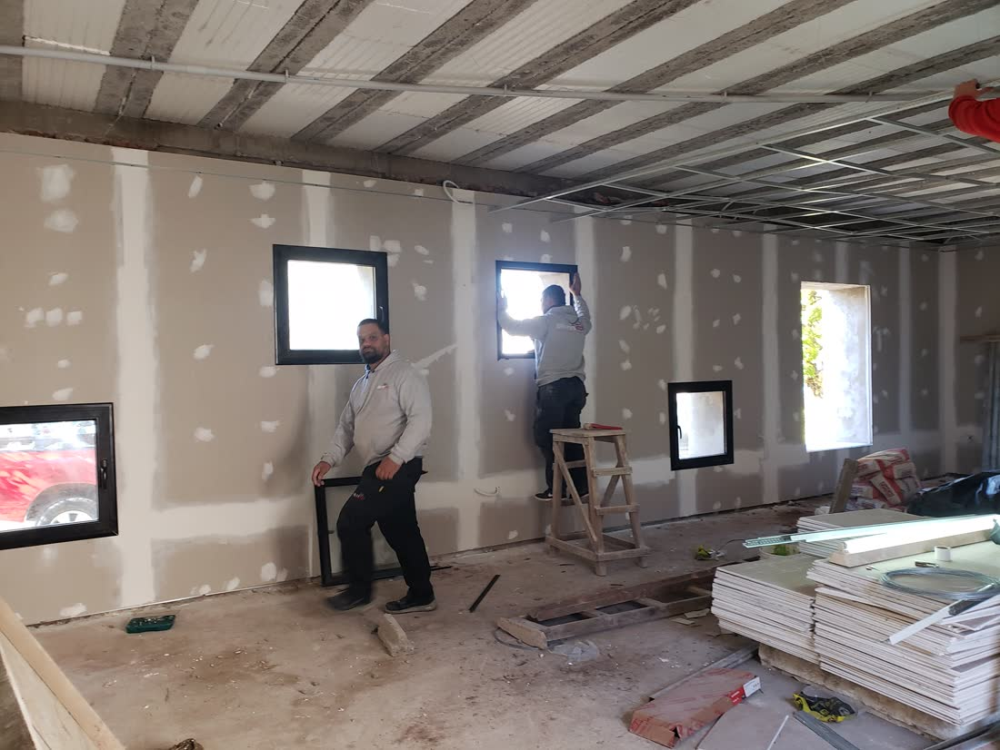
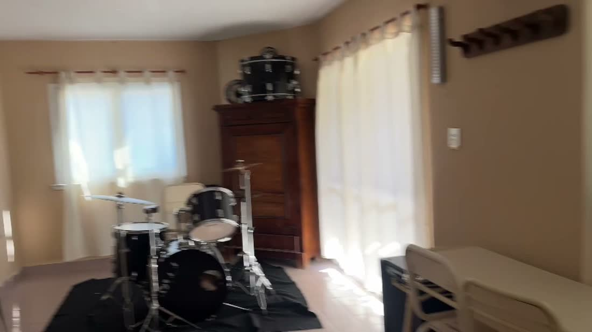
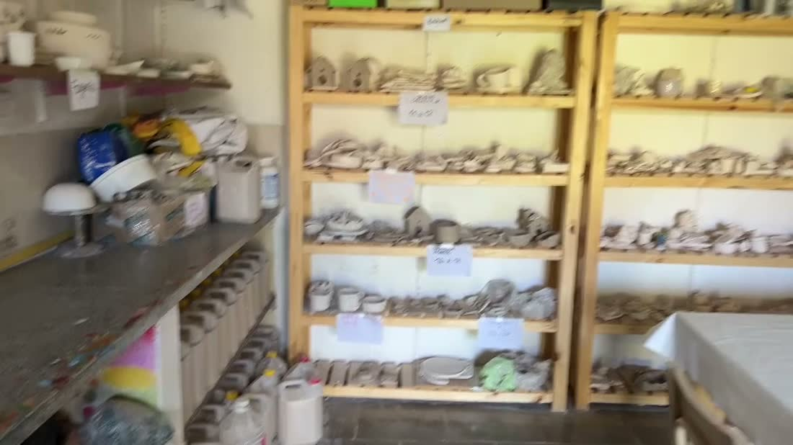

<title>SIGEP 360 · Patrimonio</title>
<link rel="stylesheet" href="https://fonts.googleapis.com/css2?family=Newsreader:ital,wght@0,300;0,400;0,500;1,400;1,500&family=IBM+Plex+Sans:wght@400;500;600&family=IBM+Plex+Mono:wght@400;500;600&display=swap">
<style>
  :root{
    color-scheme: light;
    --bg:#FAFAF8; --surface:#FFFFFF; --surface-2:#F1F0EC;
    --ink:#161512; --ink-2:#514E46; --ink-muted:#8A867C;
    --border:rgba(22,21,18,.13); --border-soft:rgba(22,21,18,.07);
    --accent:#184F95; --accent-soft:#2a78d6; --accent-wash:#EAF0F9;
    --good:#0ca30c; --warning:#b9820c; --serious:#c1602f; --critical:#b23434;
  }
  @media (prefers-color-scheme: dark){
    :root:not([data-theme="light"]){
      color-scheme: dark;
      --bg:#121210; --surface:#1A1917; --surface-2:#222220;
      --ink:#F5F4F0; --ink-2:#C7C3B8; --ink-muted:#8f8b80;
      --border:rgba(255,255,255,.14); --border-soft:rgba(255,255,255,.08);
      --accent:#86b6ef; --accent-soft:#3987e5; --accent-wash:#182335;
      --good:#3fc23f; --warning:#e0b23e; --serious:#e38a5c; --critical:#e46868;
    }
  }
  :root[data-theme="dark"]{
    color-scheme: dark;
    --bg:#121210; --surface:#1A1917; --surface-2:#222220;
    --ink:#F5F4F0; --ink-2:#C7C3B8; --ink-muted:#8f8b80;
    --border:rgba(255,255,255,.14); --border-soft:rgba(255,255,255,.08);
    --accent:#86b6ef; --accent-soft:#3987e5; --accent-wash:#182335;
    --good:#3fc23f; --warning:#e0b23e; --serious:#e38a5c; --critical:#e46868;
  }

  *{ box-sizing:border-box; }
  html{ scroll-behavior:smooth; }
  body{
    margin:0; background:var(--bg); color:var(--ink); font-family:"IBM Plex Sans",sans-serif; line-height:1.6;
    padding-left:max(20px, env(safe-area-inset-left,0px)); padding-right:max(20px, env(safe-area-inset-right,0px));
  }
  .serif{ font-family:"Newsreader",serif; }
  .mono{ font-family:"IBM Plex Mono",monospace; font-variant-numeric:tabular-nums; }
  img{ max-width:100%; display:block; }
  a{ color:var(--accent); }
  ::selection{ background:var(--accent); color:#fff; }

  .wrap{ max-width:720px; margin:0 auto; }
  .wrap-wide{ max-width:920px; margin:0 auto; }

  .label{ font-family:"IBM Plex Mono",monospace; font-size:.68rem; letter-spacing:.18em; text-transform:uppercase; color:var(--ink-muted); }

  header.hero{ padding:80px 0 70px; text-align:center; }
  header.hero .label{ margin-bottom:34px; }
  h1.thesis{ font-family:"Newsreader",serif; font-weight:300; font-size:clamp(2.3rem,6.4vw,4rem); line-height:1.12; margin:0; }
  h1.thesis em{ font-style:italic; color:var(--accent); font-weight:400; }
  .brandline{ margin-top:26px; font-family:"IBM Plex Mono",monospace; font-size:.82rem; letter-spacing:.08em; color:var(--ink-muted); }
  .brandline b{ color:var(--ink); }
  p.lead{ font-size:1.05rem; color:var(--ink-2); max-width:52ch; margin:26px auto 0; }
  .statline{ margin-top:40px; display:flex; justify-content:center; gap:0; flex-wrap:wrap; }
  .statline .s{ padding:0 22px; border-left:1px solid var(--border); display:flex; flex-direction:column; gap:2px; }
  .statline .s:first-child{ border-left:none; padding-left:0; }
  .statline .n{ font-family:"Newsreader",serif; font-size:1.5rem; }
  .statline .l{ font-size:.7rem; color:var(--ink-muted); }
  @media (max-width:520px){ .statline .s{ border-left:none; padding:6px 14px; } }

  .verb-strip{ display:flex; flex-wrap:wrap; justify-content:center; gap:8px 10px; margin:34px auto 0; max-width:640px; }
  .verb-chip{ font-family:"IBM Plex Mono",monospace; font-size:.72rem; padding:5px 12px; border:1px solid var(--border); border-radius:99px; color:var(--ink-2); }
  .verb-chip b{ color:var(--ink); font-weight:600; }

  section.chapter{ padding:64px 0; border-top:1px solid var(--border-soft); }
  .chapter-head{ margin-bottom:34px; }
  .chapter-head .label{ margin-bottom:14px; }
  .chapter-head h2{ font-family:"Newsreader",serif; font-weight:400; font-size:clamp(1.5rem,3.6vw,2.1rem); margin:0; }
  .chapter-head p{ color:var(--ink-2); margin-top:12px; max-width:60ch; }

  .reveal{ opacity:0; transform:translateY(14px); transition:opacity .7s ease, transform .7s ease; }
  .reveal.in{ opacity:1; transform:translateY(0); }
  @media (prefers-reduced-motion:reduce){ .reveal{ opacity:1; transform:none; } }

  /* --- diagnóstico: two columns --- */
  .diag-toggle{
    display:inline-flex; align-items:center; gap:10px; background:none; border:1px solid var(--border);
    border-radius:99px; padding:8px 16px; cursor:pointer; font-family:"IBM Plex Mono",monospace; font-size:.76rem; color:var(--ink); margin-bottom:30px;
  }
  .diag-toggle .sw{ width:30px; height:16px; border-radius:99px; background:var(--surface-2); position:relative; }
  .diag-toggle .sw::after{ content:''; position:absolute; top:2px; left:2px; width:12px; height:12px; border-radius:50%; background:var(--ink-muted); transition:transform .25s; }
  .diag-toggle.on .sw::after{ transform:translateX(14px); background:var(--accent); }
  .diag-cols{ display:grid; grid-template-columns:1fr 1fr; gap:40px; }
  @media (max-width:600px){ .diag-cols{ grid-template-columns:1fr; gap:26px; } }
  .diag-col .k{ font-family:"IBM Plex Mono",monospace; font-size:.68rem; text-transform:uppercase; letter-spacing:.1em; color:var(--ink-muted); margin-bottom:14px; }
  .diag-col ul{ list-style:none; margin:0; padding:0; display:flex; flex-direction:column; gap:10px; }
  .diag-col li{ font-size:.98rem; color:var(--ink-2); padding-bottom:10px; border-bottom:1px solid var(--border-soft); transition:opacity .4s ease, text-decoration-color .4s ease; }
  .diag-col.today li{ text-decoration:line-through; text-decoration-color:transparent; }
  .diag-col.today.faded li{ opacity:.4; text-decoration-color:var(--ink-muted); }
  .diag-col.sigep{ opacity:0; transform:translateX(-6px); transition:opacity .5s ease, transform .5s ease; }
  .diag-col.sigep.show{ opacity:1; transform:none; }
  .diag-col.sigep li{ color:var(--ink); }
  .diag-col.sigep li b{ color:var(--accent); }

  /* --- mapa --- */
  .map-frame{ border:1px solid var(--border); }
  .map-frame img{ width:100%; }

  /* --- pilares: numbered list --- */
  .plist{ display:flex; flex-direction:column; }
  .prow{ padding:22px 0; border-top:1px solid var(--border); cursor:pointer; }
  .prow:last-child{ border-bottom:1px solid var(--border); }
  .prow-head{ display:flex; align-items:baseline; gap:18px; }
  .prow-head .pn{ font-family:"Newsreader",serif; font-style:italic; color:var(--ink-muted); font-size:1.1rem; flex:0 0 auto; }
  .prow-head h4{ font-family:"Newsreader",serif; font-weight:400; font-size:1.25rem; margin:0; flex:1; }
  .prow-head .x{ font-family:"IBM Plex Mono"; color:var(--ink-muted); transition:transform .25s; }
  .prow.open .prow-head .x{ transform:rotate(45deg); }
  .prow p{ font-size:.92rem; color:var(--ink-2); max-width:64ch; max-height:0; overflow:hidden; margin:0 0 0 calc(1.1rem + 18px); transition:max-height .3s ease, margin .3s ease; }
  .prow.open p{ max-height:200px; margin-top:12px; }
  .nivel-grid{ display:grid; grid-template-columns:1fr 1fr; gap:10px 30px; margin-top:24px; }
  @media (max-width:600px){ .nivel-grid{ grid-template-columns:1fr; } }
  .nivel-row{ display:flex; gap:10px; align-items:baseline; padding:8px 0; border-top:1px solid var(--border-soft); font-size:.86rem; }
  .nivel-row .nn{ font-family:"IBM Plex Mono",monospace; font-size:.68rem; color:var(--ink-muted); flex:0 0 auto; }
  .nivel-row .nt{ color:var(--ink); font-weight:600; }
  .nivel-row .nd{ color:var(--ink-2); }

  /* --- ISE --- */
  .ise-shell{ display:grid; grid-template-columns:180px 1fr; gap:44px; align-items:start; }
  @media (max-width:640px){ .ise-shell{ grid-template-columns:1fr; } }
  .gauge{ text-align:center; }
  .gauge-num{ font-family:"Newsreader",serif; font-weight:300; font-size:4.6rem; line-height:1; }
  .gauge-band{ font-family:"IBM Plex Mono"; font-size:.7rem; letter-spacing:.08em; text-transform:uppercase; color:var(--ink-muted); margin-top:6px; }
  .gauge-ring{ width:130px; height:130px; margin:0 auto; }
  .islider{ display:grid; grid-template-columns:1fr auto; gap:4px 14px; align-items:center; padding:14px 0; border-top:1px solid var(--border-soft); }
  .islider label{ font-size:.88rem; grid-column:1; }
  .islider .w{ font-size:.66rem; color:var(--ink-muted); font-family:"IBM Plex Mono"; display:block; margin-top:2px; }
  .islider .v{ font-family:"IBM Plex Mono"; font-size:.9rem; grid-row:1; grid-column:2; }
  .islider input[type=range]{ grid-column:1/-1; width:100%; accent-color:var(--accent); margin-top:4px; }
  .ise-reset{ margin-top:16px; font-size:.76rem; font-family:"IBM Plex Mono"; color:var(--accent); background:none; border:none; cursor:pointer; padding:0; text-decoration:underline; }

  /* --- EMEAI --- */
  .photo-row{ display:grid; grid-template-columns:1.4fr 1fr 1fr; gap:14px; }
  .photo-row.second{ grid-template-columns:1fr 1fr 1.4fr; margin-top:14px; }
  @media (max-width:640px){ .photo-row, .photo-row.second{ grid-template-columns:1fr; } }
  .photo-row img{ width:100%; height:100%; object-fit:cover; aspect-ratio:4/3; }
  .photo-cap{ font-size:.7rem; color:var(--ink-muted); margin-top:10px; }
  .emeai-stats{ display:flex; flex-wrap:wrap; gap:0; margin:28px 0; }
  .emeai-stats .s{ padding:0 24px 0 0; margin-right:24px; border-right:1px solid var(--border); }
  .emeai-stats .s:last-child{ border-right:none; }
  .emeai-stats .n{ font-family:"Newsreader",serif; font-size:1.7rem; }
  .emeai-stats .l{ font-size:.7rem; color:var(--ink-muted); }
  .link-line{ font-size:.95rem; }
  .link-line a{ text-decoration:underline; text-underline-offset:3px; }

  /* --- trayectoria --- */
  .traj-shell{ display:grid; grid-template-columns:1fr 1fr; gap:50px; }
  @media (max-width:640px){ .traj-shell{ grid-template-columns:1fr; gap:34px; } }
  .traj-col .k{ font-family:"IBM Plex Mono",monospace; font-size:.68rem; text-transform:uppercase; letter-spacing:.1em; color:var(--ink-muted); margin-bottom:16px; }
  .traj-row{ display:grid; grid-template-columns:64px 1fr 30px; gap:12px; align-items:center; padding:8px 0; border-top:1px solid var(--border-soft); }
  .traj-row .rl{ font-family:"IBM Plex Mono"; font-size:.76rem; color:var(--ink-2); }
  .traj-row .rt{ height:1px; background:var(--border); position:relative; }
  .traj-row .rt span{ position:absolute; left:0; top:-1.5px; height:4px; background:var(--accent); }
  .traj-row .rv{ font-family:"IBM Plex Mono"; font-size:.78rem; text-align:right; color:var(--ink); }

  /* --- BAMUR --- */
  .bamur p{ font-size:1rem; color:var(--ink-2); max-width:64ch; }
  .bamur .k{ font-family:"Newsreader",serif; font-style:italic; font-size:1.5rem; color:var(--ink); display:block; margin-bottom:14px; }

  /* --- roadmap --- */
  .rm-track{ position:relative; height:1px; background:var(--border); margin:44px 0 0; }
  .rm-fill{ position:absolute; left:0; top:0; height:100%; background:var(--accent); transition:width .3s ease; }
  .rm-nodes{ display:flex; justify-content:space-between; position:relative; top:-5px; }
  .rm-node{ width:11px; height:11px; border-radius:50%; background:var(--bg); border:1.5px solid var(--border); cursor:pointer; transition:all .2s; }
  .rm-node.active{ background:var(--accent); border-color:var(--accent); transform:scale(1.4); }
  .rm-labels{ display:flex; justify-content:space-between; margin-top:14px; }
  .rm-labels span{ font-family:"IBM Plex Mono"; font-size:.66rem; color:var(--ink-muted); flex:1; text-align:center; }
  .rm-labels span:first-child{ text-align:left; } .rm-labels span:last-child{ text-align:right; }
  .rm-detail{ margin-top:36px; border-top:1px solid var(--border); padding-top:20px; min-height:110px; }
  .rm-detail .y{ font-family:"IBM Plex Mono"; color:var(--accent); font-size:.78rem; }
  .rm-detail h4{ font-family:"Newsreader",serif; font-weight:400; font-size:1.4rem; margin:6px 0 8px; }
  .rm-detail p{ color:var(--ink-2); font-size:.9rem; max-width:64ch; margin:0; }

  /* --- cierre --- */
  .closer{ text-align:center; padding:90px 0 60px; }
  .closer .q{ font-family:"Newsreader",serif; font-style:italic; font-weight:300; font-size:clamp(1.6rem,4vw,2.4rem); max-width:20ch; margin:0 auto 30px; line-height:1.3; }
  .cta-row{ display:flex; gap:30px; justify-content:center; flex-wrap:wrap; margin-top:10px; }
  .cta-row a{ font-size:.92rem; text-decoration:underline; text-underline-offset:4px; }
  footer.pf{ text-align:center; padding:30px 0 60px; color:var(--ink-muted); font-size:.76rem; }
</style>

<header class="hero">
  <div class="wrap">
    <div class="label">Concurso Jefatura de Obras Públicas — Municipalidad de Ayacucho</div>
    <h1 class="thesis">De reparar edificios<br>a <em>gestionar patrimonio.</em></h1>
    <div class="brandline"><b>SIGEP 360</b> — Sistema Inteligente de Gestión para los Edificios Públicos</div>
    <p class="lead">Un sistema de trabajo real para Obras Públicas, construido con planos, fotografías y registros reales del archivo municipal — no una maqueta.</p>
    <div class="statline">
      <div class="s"><span class="n serif">71</span><span class="l">dependencias municipales</span></div>
      <div class="s"><span class="n serif">2027</span><span class="l">arranca el MVP</span></div>
      <div class="s"><span class="n serif">25</span><span class="l">intervenciones reales en EMEAI</span></div>
      <div class="s"><span class="n serif">43</span><span class="l">edificios con historial documentado</span></div>
    </div>
    <div class="verb-strip">
      <span class="verb-chip"><b>Conocer</b></span><span class="verb-chip"><b>Prevenir</b></span>
      <span class="verb-chip"><b>Priorizar</b></span><span class="verb-chip"><b>Optimizar</b></span>
      <span class="verb-chip"><b>Transformar</b></span><span class="verb-chip"><b>Valorar</b></span>
      <span class="verb-chip"><b>Preservar</b></span><span class="verb-chip"><b>Replicar</b></span>
    </div>
  </div>
</header>

<main class="wrap">

  <section class="chapter" id="diagnostico">
    <div class="chapter-head reveal">
      <div class="label">01 — Diagnóstico</div>
      <h2>Hoy entra por cualquier lado.</h2>
      <p>Los pedidos llegan por WhatsApp, teléfono, notas, expedientes o en persona, sin un sistema que los concentre.</p>
    </div>
    <div class="reveal">
      <button class="diag-toggle" id="diagToggle" type="button"><span class="sw"></span><span id="diagLabel">Mostrar cómo queda con SIGEP 360</span></button>
      <div class="diag-cols">
        <div class="diag-col today" id="colToday">
          <div class="k">Hoy</div>
          <ul>
            <li>WhatsApp del jefe de cuadrilla</li>
            <li>Llamados telefónicos sueltos</li>
            <li>Notas en papel</li>
            <li>Expedientes por separado</li>
            <li>Reclamos en persona</li>
          </ul>
        </div>
        <div class="diag-col sigep" id="colSigep">
          <div class="k">Con SIGEP 360</div>
          <ul>
            <li><b>Un único registro</b>, sin importar el canal de entrada</li>
            <li>Clasificado por <b>rubro</b> automáticamente</li>
            <li>Con <b>prioridad</b> calculada (urgencia, riesgo, antigüedad)</li>
            <li>Vinculado a <b>materiales</b> y agenda de cuadrilla</li>
            <li>Con <b>trazabilidad</b> completa hasta el cierre</li>
          </ul>
        </div>
      </div>
    </div>
  </section>

  <section class="chapter" id="mapa">
    <div class="chapter-head reveal">
      <div class="label">02 — Territorio</div>
      <h2>Ayacucho, Buenos Aires.</h2>
      <p>Planta Urbana 2024 oficial, aportada por la Secretaría de Obras y Servicios Públicos — no un mapa aproximado. El Hospital y Obras Públicas ya están identificados sobre el propio plano, junto a los 20 barrios que componen el casco urbano.</p>
    </div>
    <div class="reveal">
      <div class="map-frame">
        
      </div>
      <p class="photo-cap">Planta Urbana 2024, Municipalidad de Ayacucho. Sobre esta misma base se construirá el Mapa SIGEP 360: filtrable por función, ISE, prioridad y OT abiertas.</p>
    </div>
  </section>

  <section class="chapter" id="pilares">
    <div class="chapter-head reveal">
      <div class="label">03 — Arquitectura y pilares</div>
      <h2>El núcleo técnico.</h2>
      <p>Siete niveles de información por edificio, y cuatro pilares que le dan sentido operativo a esos niveles.</p>
    </div>
    <div class="plist reveal" id="pillars">
      <div class="prow" data-i="1">
        <div class="prow-head"><span class="pn">01</span><h4>Inventario</h4><span class="x">+</span></div>
        <p>Código SIGEP, ubicación, catastro, superficies, planos, fotos, instalaciones, responsables, costos e historial — visualizados también en un mapa GIS. Dinámico: se dan de alta, baja o modifican edificios.</p>
      </div>
      <div class="prow" data-i="2">
        <div class="prow-head"><span class="pn">02</span><h4>Historia Clínica</h4><span class="x">+</span></div>
        <p>Patología → diagnóstico → intervención → materiales → fotos → costo → resultado → control → próxima inspección. Dentro de 10 o 20 años se sabrá exactamente qué ocurrió en cada edificio.</p>
      </div>
      <div class="prow" data-i="3">
        <div class="prow-head"><span class="pn">03</span><h4>ISE</h4><span class="x">+</span></div>
        <p>Índice de Salud Edilicia, 0–100, complementado con un factor de criticidad funcional. Ayuda a decidir; nunca reemplaza el criterio profesional. Probalo en la próxima sección.</p>
      </div>
      <div class="prow" data-i="4">
        <div class="prow-head"><span class="pn">04</span><h4>Priorización</h4><span class="x">+</span></div>
        <p>Urgencia, riesgo, ISE, criticidad funcional, antigüedad del reclamo, recursos y posibilidad de agrupar tareas. Las emergencias superan el orden normal automáticamente.</p>
      </div>
    </div>
    <div class="reveal nivel-grid">
      <div class="nivel-row"><span class="nn">N1</span><span class="nt">Identidad</span></div>
      <div class="nivel-row"><span class="nn">N2</span><span class="nt">Historia Clínica</span></div>
      <div class="nivel-row"><span class="nn">N3</span><span class="nt">Estado</span></div>
      <div class="nivel-row"><span class="nn">N4</span><span class="nt">Mantenimiento</span></div>
      <div class="nivel-row"><span class="nn">N5</span><span class="nt">Recursos</span></div>
      <div class="nivel-row"><span class="nn">N6</span><span class="nt">Ambiente</span></div>
      <div class="nivel-row"><span class="nn">N7</span><span class="nt">Evolución</span></div>
    </div>
  </section>

  <section class="chapter" id="ise">
    <div class="chapter-head reveal">
      <div class="label">04 — ISE en vivo</div>
      <h2>Movés los valores, cambia el índice.</h2>
      <p>Misma fórmula del plan, aplicada a EMEAI. Los valores de partida son el cálculo de ejemplo del piloto.</p>
    </div>
    <div class="ise-shell reveal">
      <div class="gauge">
        <svg class="gauge-ring" viewBox="0 0 130 130">
          <circle cx="65" cy="65" r="58" fill="none" stroke="var(--border)" stroke-width="1"/>
          <circle id="gaugeArc" cx="65" cy="65" r="58" fill="none" stroke="var(--accent)" stroke-width="1.5" stroke-linecap="round" transform="rotate(-90 65 65)" stroke-dasharray="364" stroke-dashoffset="364"/>
        </svg>
        <div class="gauge-num serif" id="iseNum" style="margin-top:-92px">—</div>
        <div class="gauge-band" id="iseBand" style="margin-top:46px">—</div>
        <button class="ise-reset" id="iseReset" type="button">restablecer valores de EMEAI</button>
      </div>
      <div id="iseSliders"></div>
    </div>
  </section>

  <section class="chapter" id="emeai">
    <div class="chapter-head reveal">
      <div class="label">05 — Caso real</div>
      <h2>EMEAI: diez años de archivo.</h2>
      <p>Antes Escuela de Música — el edificio con el que se probó todo el concepto, con fotos y datos reales (2013–2026).</p>
    </div>
    <div class="reveal">
      <div class="photo-row">
        
        
        
      </div>
      <div class="photo-row second">
        
        
        
      </div>
      <p class="photo-cap">Archivo municipal, 2013 → relevamiento septiembre 2026. Selección real, sin retocar.</p>
      <div class="emeai-stats">
        <div class="s"><span class="n serif">1.150,73 m²</span><span class="l">construidos</span></div>
        <div class="s"><span class="n serif">25</span><span class="l">intervenciones documentadas</span></div>
        <div class="s"><span class="n serif">≈72</span><span class="l">ISE de ejemplo</span></div>
      </div>
      <p class="link-line"><a href="../emeai/artifact/" target="_blank" rel="noopener">Abrir el piloto interactivo completo →</a></p>
    </div>
  </section>

  <section class="chapter bamur" id="bamur">
    <div class="chapter-head reveal">
      <div class="label">06 — Dos casos reales</div>
      <h2>Lo que pasa sin sistema, y lo que se gana con uno.</h2>
    </div>
    <div class="reveal">
      <span class="k">La pinotea que no se tiró.</span>
      <p>Durante una intervención sobre el edificio original de la Escuela de Música se recuperó piso de madera de pinotea en buen estado. BAMUR (Banco Municipal de Materiales Recuperados) lo registra con código, cantidad, estado y fotografías, para que en otra obra municipal alguien pueda reutilizarlo en vez de comprar madera nueva. Economía circular aplicada a la gestión municipal.</p>
    </div>
    <div class="reveal" style="margin-top:36px">
      <span class="k">La Biblioteca, y la decisión que faltó documentar.</span>
      <p>Una intervención previa en la Biblioteca, vinculada a accesibilidad, derivó en una solución provisoria incómoda: se resolvió una necesidad puntual sin pasar por evaluación técnica integral. No es un caso para personalizar responsabilidades — es el ejemplo exacto de por qué las decisiones edilicias relevantes necesitan evaluación técnica documentada antes de ejecutarse, y no una corrección después. Los responsables cambian; el edificio permanece.</p>
    </div>
  </section>

  <section class="chapter" id="trayectoria">
    <div class="chapter-head reveal">
      <div class="label">07 — Trayectoria institucional</div>
      <h2>EMEAI es un caso, no el único.</h2>
      <p>El mismo archivo que documenta EMEAI registra obras en 43 edificios y espacios municipales distintos desde 2013 — la prueba de que Obras Públicas ya sostiene un volumen de gestión considerable. SIGEP 360 lo ordena, no lo inventa.</p>
    </div>
    <div class="reveal traj-shell" id="trajShell">
      <div class="traj-col">
        <div class="k">Obras iniciadas por año</div>
        <div id="trajYears"></div>
      </div>
      <div class="traj-col">
        <div class="k">Por modalidad de contratación</div>
        <div id="trajModal"></div>
      </div>
    </div>
  </section>

  <section class="chapter" id="ruta">
    <div class="chapter-head reveal">
      <div class="label">08 — Hoja de ruta</div>
      <h2>2027 → 2037.</h2>
    </div>
    <div class="reveal">
      <div class="rm-track"><div class="rm-fill" id="rmFill"></div></div>
      <div class="rm-nodes" id="rmNodes"></div>
      <div class="rm-labels"><span>2027</span><span>2028</span><span>2029–30</span><span>2031–33</span><span>2034–37</span></div>
      <div class="rm-detail" id="rmDetail"></div>
    </div>
  </section>

  <section class="closer" id="cierre">
    <div class="reveal">
      <div class="q">"Conocer para planificar. Planificar para mantener. Mantener para evitar reparar."</div>
      <p style="max-width:46ch; margin:0 auto 8px; font-size:.86rem; color:var(--ink-muted)">El dossier completo suma, además, la tabla de riesgos y medidas de control, el módulo de compras detallado y los anexos operativos (Ficha SIGEP, Orden de Trabajo).</p>
      <div class="cta-row">
        <a href="../dossier/" target="_blank" rel="noopener">Leer el dossier completo →</a>
        <a href="../emeai/artifact/" target="_blank" rel="noopener">Ver el piloto EMEAI →</a>
      </div>
    </div>
  </section>

</main>
<footer class="pf">Construido con planos, fotografías y registros reales del archivo de Obras Públicas de la Municipalidad de Ayacucho.</footer>

<script>
(function(){
  var io = new IntersectionObserver(function(entries){ entries.forEach(function(e){ if(e.isIntersecting) e.target.classList.add('in'); }); }, {threshold:.12});
  document.querySelectorAll('.reveal').forEach(function(el){ io.observe(el); });

  /* diagnóstico toggle */
  var toggle = document.getElementById('diagToggle');
  var label = document.getElementById('diagLabel');
  var colToday = document.getElementById('colToday');
  var colSigep = document.getElementById('colSigep');
  var on = false;
  toggle.addEventListener('click', function(){
    on = !on;
    toggle.classList.toggle('on', on);
    colToday.classList.toggle('faded', on);
    colSigep.classList.toggle('show', on);
    label.textContent = on ? 'Volver a "hoy"' : 'Mostrar cómo queda con SIGEP 360';
  });

  /* pilares */
  document.querySelectorAll('.prow').forEach(function(r){ r.addEventListener('click', function(){ r.classList.toggle('open'); }); });

  /* ISE */
  var ISE_ITEMS = [
    { key:'estructura', label:'Estructura', weight:20, val:78 },
    { key:'cubiertas', label:'Cubiertas', weight:15, val:65 },
    { key:'electrica', label:'Instalación eléctrica', weight:15, val:60 },
    { key:'sanitarias', label:'Sanitarias', weight:10, val:85 },
    { key:'clima', label:'Gas / climatización', weight:10, val:88 },
    { key:'fachadas', label:'Fachadas / revoques', weight:10, val:70 },
    { key:'accesibilidad', label:'Accesibilidad / seguridad', weight:10, val:55 },
    { key:'carpinterias', label:'Carpinterías', weight:5, val:75 },
    { key:'mantenimiento', label:'Mantenimiento general', weight:5, val:72 }
  ];
  var iseSliders = document.getElementById('iseSliders');
  iseSliders.innerHTML = ISE_ITEMS.map(function(it){
    return '<div class="islider"><label>'+it.label+'<span class="w">peso '+it.weight+'%</span></label>'+
      '<span class="v mono" id="v-'+it.key+'">'+it.val+'</span>'+
      '<input type="range" min="0" max="100" value="'+it.val+'" data-key="'+it.key+'"></div>';
  }).join('');
  var iseNum = document.getElementById('iseNum'), iseBand = document.getElementById('iseBand'), gaugeArc = document.getElementById('gaugeArc');
  var CIRC = 364;
  function recompute(){
    var total = 0;
    ISE_ITEMS.forEach(function(it){
      var v = Number(iseSliders.querySelector('[data-key="'+it.key+'"]').value);
      document.getElementById('v-'+it.key).textContent = v;
      total += v*it.weight/100;
    });
    total = Math.round(total);
    iseNum.textContent = total;
    var band = total>=80?['BUENO','good']:total>=60?['ATENCIÓN','warning']:total>=40?['PRIORITARIO','serious']:['CRÍTICO','critical'];
    iseBand.textContent = band[0];
    var color = getComputedStyle(document.documentElement).getPropertyValue('--'+band[1]).trim();
    gaugeArc.setAttribute('stroke', color);
    gaugeArc.setAttribute('stroke-dashoffset', CIRC - (CIRC*total/100));
  }
  iseSliders.addEventListener('input', recompute);
  document.getElementById('iseReset').addEventListener('click', function(){
    ISE_ITEMS.forEach(function(it){ iseSliders.querySelector('[data-key="'+it.key+'"]').value = it.val; });
    recompute();
  });
  recompute();

  /* trayectoria institucional (datos reales del archivo municipal) */
  var POR_ANIO = {"2013":11,"2014":9,"2015":11,"2016":9,"2017":25,"2018":30,"2019":19,"2020":5,"2021":13,"2022":22,"2023":15};
  var POR_MODALIDAD = {"Compra Directa":149,"Concurso de Precios":55,"Licitación Privada":22,"Licitación Pública":1,"Otra modalidad":6};
  function renderTraj(id, data){
    var entries = Object.entries(data);
    var max = Math.max.apply(null, entries.map(function(e){ return e[1]; }));
    document.getElementById(id).innerHTML = entries.map(function(e){
      var w = Math.round(e[1]/max*100);
      return '<div class="traj-row"><span class="rl">'+e[0]+'</span><span class="rt"><span style="width:'+w+'%"></span></span><span class="rv">'+e[1]+'</span></div>';
    }).join('');
  }
  renderTraj('trajYears', POR_ANIO);
  renderTraj('trajModal', POR_MODALIDAD);

  /* roadmap */
  var PHASES = [
    { y:'2027', t:'Ordenar', d:'Inventario dinámico, codificación, mapa, fichas, relevamiento inicial, piloto de cubiertas y Orden de Trabajo. Incluye el sprint de diagnóstico "Año 0": el ISE inicial real de cada edificio.' },
    { y:'2028', t:'Estandarizar', d:'ISE, criticidad, protocolos preventivos, QR, planificación sistemática de cuadrillas.' },
    { y:'2029–2030', t:'Medir', d:'Pasaporte energético, indicadores, BAMUR, consumos y primeros proyectos de eficiencia.' },
    { y:'2031–2033', t:'Integrar', d:'Tablero avanzado, sensores donde aporten valor, automatización, proyectos ambientales y energéticos piloto, con financiamiento externo gestionado.' },
    { y:'2034–2037', t:'Anticipar', d:'Analítica histórica, asistencia con Inteligencia Artificial, mantenimiento predictivo y consolidación del Plan Director.' }
  ];
  var rmNodes = document.getElementById('rmNodes'), rmFill = document.getElementById('rmFill'), rmDetail = document.getElementById('rmDetail');
  PHASES.forEach(function(p,i){ var n=document.createElement('div'); n.className='rm-node'; n.addEventListener('click',function(){selectPhase(i);}); rmNodes.appendChild(n); });
  function selectPhase(i){
    Array.from(rmNodes.children).forEach(function(n,idx){ n.classList.toggle('active', idx===i); });
    rmFill.style.width = (i/(PHASES.length-1)*100)+'%';
    var p = PHASES[i];
    rmDetail.innerHTML = '<div class="y">'+p.y+'</div><h4 class="serif">'+p.t+'</h4><p>'+p.d+'</p>';
  }
  selectPhase(0);
})();
</script>
